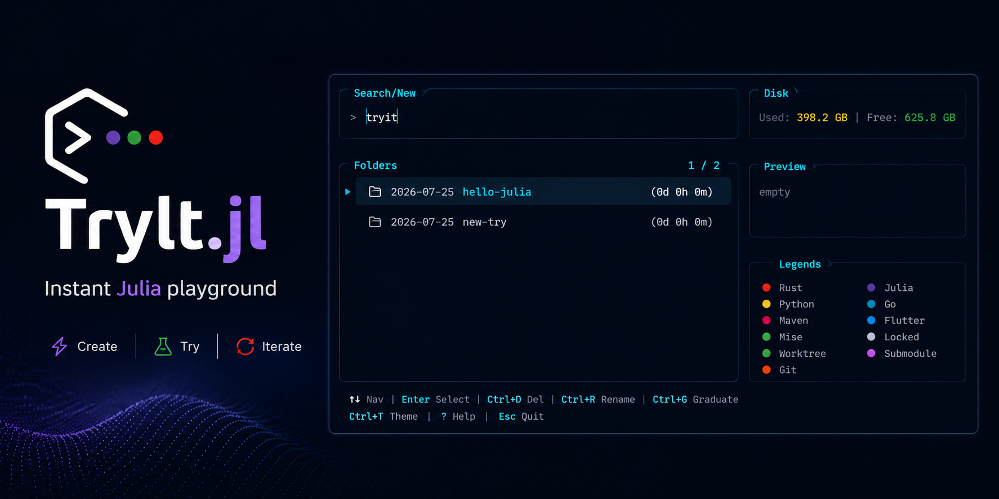

TryIt.jl

An ephemeral-workspace manager for Julia developers.tryit spins up a dated scratch directory, drops you into it, and lets you clone repositories or take a git worktree of the repo you're in without polluting your working tree.TryIt.jl is a functional mirror of Tobi Lütke's try — also reimplemented in C as tobi/try-cli and in Rust as try-rs — with a TUI built on Tachikoma.jl.
Contents
- Getting Started — install, shell integration, daily workflow (
tryit,tryit clone,tryit worktree). - Selector Interface — the panel layout, badges, and key bindings.
- Standalone App — build a self-contained
tryitexecutable with PackageCompiler. - Reference — auto-generated API documentation.
- Development — gates, drift guards, and the environments a dependency change breaks.
- Requirements — EARS traceability and the path to v1.0.